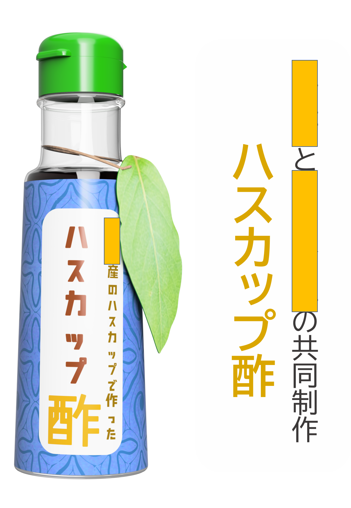
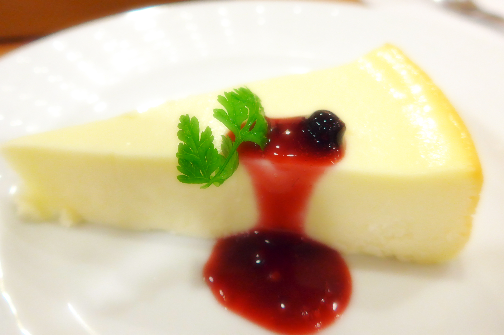
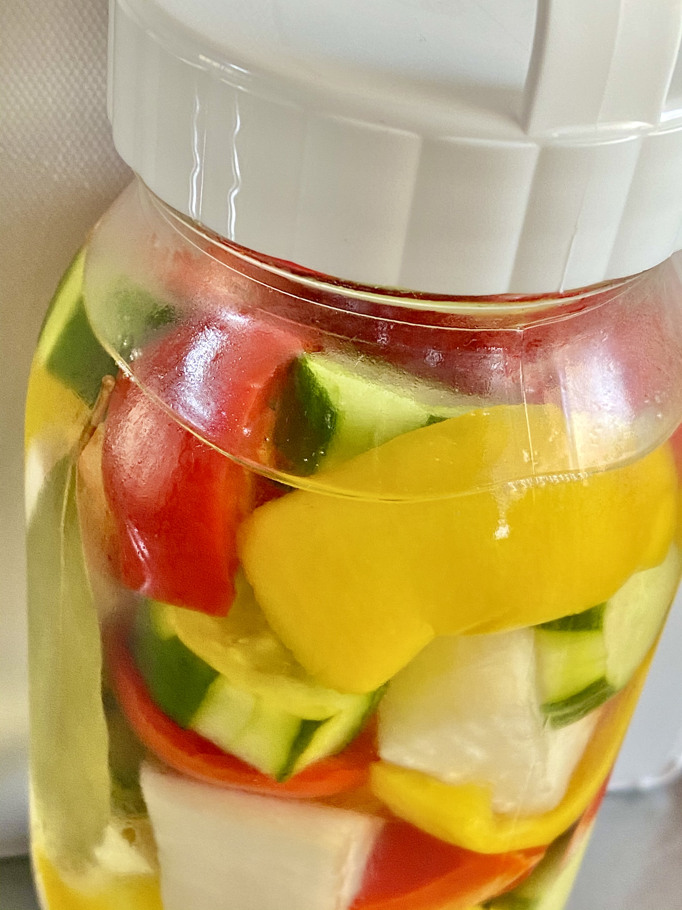

ハスカップビネガーと合う
NYチーズケーキ

材料
|
|
| ハスカップ酢 |
お好みの量 |
| クリームチーズ |
200 g |
| 砂糖 |
60 g |
| 卵 |
1個 |
| 生クリーム |
200 cc |
| レモン汁 |
大さじ1 |
| 片栗粉 |
大さじ1 |
| ビスケット |
100 g |
| 無縁バター |
40 g |
作り方
- ① クリームチーズとバターを室温に戻しておく,オーブンは140℃に予熱しておく
- ② ビスケットを細かく砕き，バターを入れて全体になじませる
- ③ 型にクッキングシート敷き，砕いたビスケットで底生地を作る
- ④ ボールにクリームチーズ，砂糖，卵，生クリームの順に加え，よく混ぜる
- ⑤ 型に生地を流し入れ，オーブンで140℃で60分焼く
- ⑥ ケーキをオーブンから出し，冷めたら冷蔵庫で冷やす．
- ⑦ ハスカップ酢をかけたら出来上がり
ハスカップビネガーで作る
フルーツピクルス

材料
|
|
| ●ハスカップ酢 |
1本(100 ml) |
| ●水 |
300 cc |
| ●ニンニク |
小3片 |
| ●黒コショウ |
10粒 |
| ●塩 |
大さじ1 |
| きゅうり |
3本 |
| カリフラワー |
半分 |
| セロリ |
20 cm |
| パプリカ |
1個 |
作り方
- ① ●の材料を混ぜて沸騰するまで加熱する
- ② 密閉容器に移し，野菜を入れる．カリフラワーは1分程軽くゆでてから入れる
- ③ 冷蔵庫に1日寝かせる